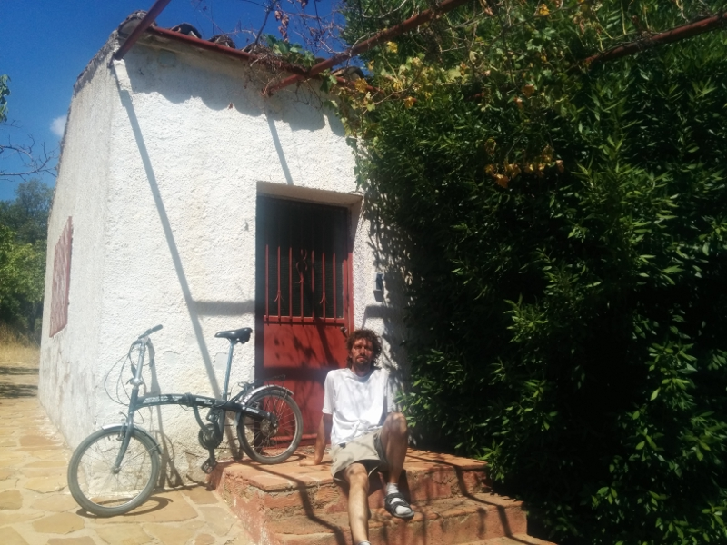

crowdfund
Here are all the posts I made to my crowdfunding campaign page since it succeeded. If that page will not open for you, try logging into Tilt first. Otherwise, stay updated here and contact me by email.---
July 11
This weekend, I received contributions to the campaign reserve from Jason Astorquia, painter, dream pursuer, and early childhood friend and Andie Dayley, who helps organize our fantastic class reunions. Thank you both very much.
At the moment, I'm finding myself a place for July so I can search for a house to retreat in. Airbnb may be the key to both. Long-term rentals can be complicated.
By the way, if you use Airbnb, would you write me a reference? Here's my profile: https://www.airbnb.com/users/show/43742016 After getting no response to reservation requests, I realized my lack of references is probably why. (Thanks Aimee and Ketil for giving positive references today!)
I was given a single-speed bicycle on Thursday and, thanks to contributor Aimee Fenech (!), a phone the week before. This gives me time to find a geared bicycle for the local hills and a smartphone to document the retreat for you and get internet anywhere.
Thanks, everyone, for your tremendous support. It is very helpful to have you all in the back of my mind as I make decisions throughout the day.
---
July 14
Hi, Friends,
I have spent the week getting used to having everything taken care of and the way forward clear. My local friends can tell I am less worried and are glad for my success with the campaign.
The first moneys from it have come. Thanks to contributor and friend, David Wallace, for helping me receive the bank transfer from Tilt. I was given a bicycle and a new friend sold me a very good used smartphone (LG Nexus 5) for very little money (50 euros). Today I will move to a smaller, quieter city, and from there begin searching for a place in the countryside to retreat. (If you wish to know where I am, please write me privately.)
I told about a thousand people about my campaign. I have had two very strong negative reactions to it on facebook, and 4-5
passive-aggressive private letters. I have taken it as a good sign that I am doing something new in my life and, given who wrote me and why, that I am doing something outside the bounds of a way of life I do not agree with.
Piece by piece, the means to my purpose are falling into place. My progress these decades has been slow, but relentless and irresistable, and it will not cease till the goal is reached.
Andrew
---
July 21
Hi, Friends,
I have moved to a still quieter town and have started looking at houses in the countryside to retreat in. A promising one has turned up: few windows to cover up, few neighbors, behind a noise-blocking hill from the town, flexible and completely supportive owners. We felt great sympathy in our first interview. We will have a second one tomorrow. More soon.
Andrew
---
July 25
Hi, Friends,
I have a minor success and a delay to report.
The place I checked out last week proved unsuitable. With no shade, the house got too hot during the day; I could hear a strange hum in the distance from a machine; and I felt uncomfortable sharing a wall with the family I would have rented from. The minor success lay in my telling them after testing it one night that it would not work. They were understanding and gave me other ideas for places to stay.
The delay comes from my feeling especially disoriented and burned out since the campaign succeeded. Just as people often get sick on the first day of a vacation, when I knew I would finally be able to retreat, something inside me gave way. In my travels, people often told me I was hard on myself. Those 28 years of stress have the momentum of a train. I have needed more time than I expected just to slow it down.
In the meantime, my usual thrift has protected the funds. I couchsurfed a week. Then I found cheap places to stay through airbnb, which I could use a sign-up credit for. For the next 18 days, I have a free place to myself in a town where the food is cheap. The privacy will help me a lot, and I aim to do a short darkroom retreat there so I am better able to organize the 20-day one I campaigned for.
Thanks again for your interest and support.
Andrew
---
August 15
Hi, Everyone,
The campaign just ended with a couple more contributions coming in just before. Thank you very much to Marion Abbott and Syed Quader. Marion, from Australia, has been a huge fan of darkroom retreating for several months since coming across my website. Syed is a good friend from my time in Norway. He was there at my first talk and book release in 2013 and always supported me and darkroom retreating. I'm very grateful to you both for your help.
It has been three weeks since I wrote. In this time, I stayed at a free apartment in a beach resort town. I continued to unwind from 28 years of stress that ended the instant the campaign succeeded on July 5. About 10 days ago, I started feeling better. I did not expect this semi-catatonic transition period, blinded as I was by the stress. So I am grateful for the extra money that came in that has partly gone to fund it.
Last week, a funny thing happened. I was looking into high-quality fans for ventilating any house I find dependably and quietly. Ventilation has always given me the most trouble in making darkrooms. I have felt especially worried about it because Mediterranean architects give almost no consideration to ventilation. A worker at an electrical supply house talked to me for an hour before realizing another shop would better serve me. We got directions there from another customer who knew the way. Next day, I rode my bike to the place in the next town over. There, the good-humored old mechanic, the kind I grew up around and always loved, suggested using a ceiling fan. It has multiple speeds and huge, quietly turning blades, building a housing around it to channel the air how I want. The thing is, I had had this idea five years ago but forgot it. It took him three or four tries to explain it because I don't understand the local language very well. But he finally managed to give my old idea back to me.
Next, I found a used folding bicycle for $80 so I can use it with the bus without being denied boarding or paying extra. This will be useful when going with supplies to and from the house I rent.
Now, I am back in the countryside at another place I can stay indefinitely for free while resuming my house search. It is a very unusual neighborhood in my experience, mostly off-grid, full of people living more simply and sanely than usual. It has a Shangri-La quality that makes me laugh at the struggle of the world beyond this little valley. I am beginning to sleep a bit better, getting bursts of energy to, for example, update you again after such a long silence. After retreating in a secluded regular house, I may return here to live because it is so cool. We'll see.
Except for the recent contributions, all the money from the campaign has come to me here in Europe. Thanks again to David Wallace for handling the many details of that for me. Now I can act on the right opportunity when I find it. Tomorrow, I will meet another realtor to look at a house to rent. If the house is not right, I will continue searching with all diligence. I seem to be a month behind in the schedule, but still within budget.
Thanks again, everybody, for your ongoing support and interest in my well-being. More news in a week or two when I have something significant to report.
Sincerely, Andrew
---
September 1
Hi, Everybody,
Good news: I found a house and last night, my first inside it, was acceptable.
It's very quiet and remote. Despite being old, it has no smell whatsoever. It has electricity, running water, and, besides windows, some holes in the wall to help ventilate it. A huge bay laurel bush shades the south wall and refreshes me every time I pass it and crush a leaf beneath my nose. I've attached a few pictures.
The odd Azorean caretaker is very accommodating. I can ride with him to town for food and supplies or take my bike. Internet is accessible from another building on the same property.
The smartphone I bought has proved invaluable in my search. Having Google Maps, Gmail, and Whatsapp in my pocket is a miracle. I found the house through Airbnb, which rules.
I wasted a lot of time with estate agents. They cater to long-term renters, which I can't even pretend to be with my finances. Or they offer expensive short-term rentals in noisy towns to vacationers. Their process is complicated, drawn-out, and favors landlords.
Then I, a homeless person at odds with the system, had counted on myself to acquire a home, a very systemic activity. This poor plan contributed to a month's delay.
But no matter. I am still within budget. None of my problems for two months have come from lack of funds. The olive orchards surrounding the house are between noisy work periods. I have a real shot at success.
Thanks to you all for your material and moral support.
Andrew
Photos:

On house steps with new folding bike
Distant shot of house from back. Closest buildings are 100m away
Distant shot of house from front. White patch at right is nearest house. It's practically the middle of nowhere. Yes.
---
September 13
Hi, Friends,
A handful of people have told me that they cannot open the campaign page to read my posts. So I have put all my posts since July on a plain web page here:
I just made a big shopping trip to the city for darkening materials and have started making components for the darkroom.
More news soon.
Andrew
---
September 28
Dear Friends,
Here is my news. It is both light and dark.
Today, I finally got over the hump in building the darkroom: making a quiet fan. I've wanted to build one for years. It is a large, slow, centrifugal fan rather than a small, fast, axial fan:
To buy one this size (42cm) would have cost hundreds. For $30, I upgraded the bearings of a motor I found in the garbage and built the blade assembly from scratch. This includes paying a local carpenter to cut parts, something I would normally do myself. It all took time, and some days I despaired, but that's prototyping for you. I feel very pleased with the result: no hum or harmonics as with high-speed fans.
When it cools off at night and indoor-outdoor temperature differential increases, the house almost ventilates itself by convection through the chimney. But daytime ventilation require mechanical assistance.
Here is the heater and non-toxic soundproofing insulation that I bought on my second trip to the city last week:
Here are four of the five lightproof vents I made two weeks ago (one is already in my bedroom):
Food has been cheap and good. I've been catching up on all the melons I missed in Scandinavia. A local family that sells produce will deliver fruit and vegies to my door for much less than I expected. My bike has gotten me to and from town like a champ for weeks. It's 7km away, half on dirt roads. I've frequently put heavy loads on it, too.
The last couple months have been strange for me, full of inertia and doubt. I have made many mistakes. Mainly, I should not have tried to rent a house through realtors. And I should have found one immediately to do a short retreat so I could recover from my immediate distress. These and some recent design and purchasing errors have cost me a lot of time. It felt sometimes like I could do nothing right, that I would be forever lost in my little forest of catch-22s.
Then, well-founded news of impending economic collapse quite unnerved me for weeks (see dollarvigilante.com). Some of my previous retreats failed due to too much external noise, light leaks, or poor air quality. I hope this one does not fail due to the fall of civilization itself. Perforce, I have concluded that some good things cannot happen until apocalypse knocks.
Naturally, I have also worried about you. I hope you will consider the basic arguments on the above site and divest yourself of cash, bonds, and most stocks in favor of metals and basic supplies. I have managed to invest a little of what you gave me so any collapse does not financially paralyze me after my retreat. The recapitualation of our vast folly finally seems to be upon us.
But as I said, this moment presents unusual opportunities. Here's to noticing and siezing them.Andrew
---
October 13, 2016
Hi,
The darkroom is ready. Retreat #1 begins in an hour. I plan to go 6 days. This should be enough to stabilize myself for now.
Afterwards, I plan to remove and store the darkroom components while another party rents the house for 10 days. Then I plan to move back in and do retreat #2 of 20 days.
The last three months have been a strange struggle. I am very relieved to begin resting today. I will write you at more length after I come out of this short retreat. Thank you for your support.
Andrew
---